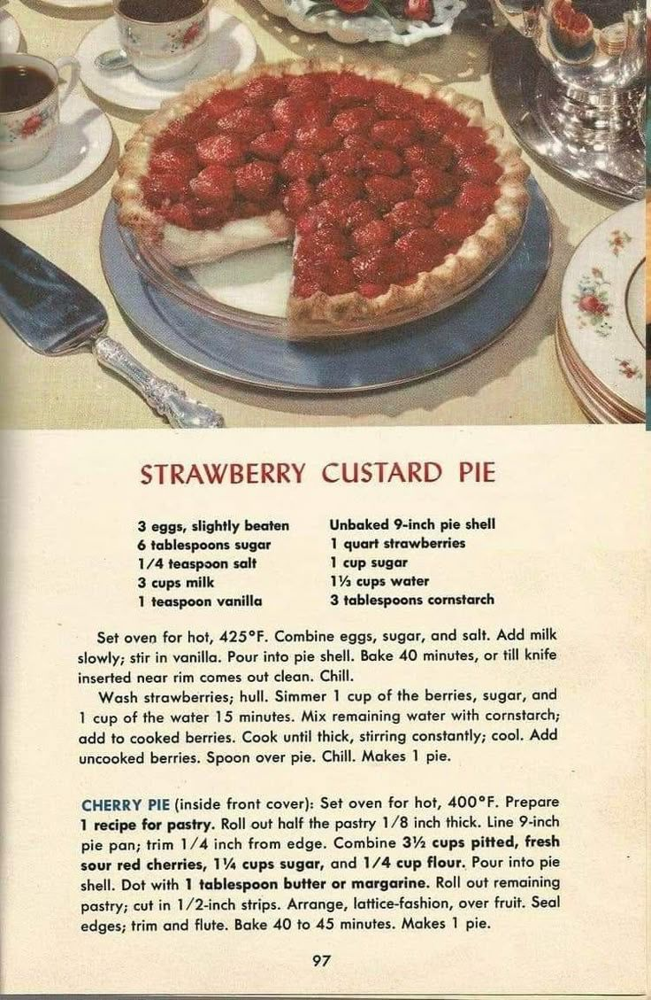

Strawberry Custard Pie

Ingredients For Custard Pie
- 3 eggs, slightly beaten
- 6 tablespoons sugar
- 1/4 teaspoon salt
- 3 cups milk
- 1 teaspoon vanilla
- Unbaked 9-inch pie shell
- 1 quart strawberries
- 1 cup sugar
- 1 1/3 cups water
- 3 tablespoons cornstarch
Instructions
- Set oven for hot, 425°F.
- Combine eggs, sugar, and salt. Add milk slowly; stir in vanilla.
- Pour into pie shell. Bake 40 minutes, or till knife inserted near rim comes out clean.
- Wash strawberries;hull. Simmer 1 cup of the berries, sugar and 1 cup of water for fifteen minutes.
- Mix remaining water with cornstarch; add to cooked berries. Spoon over pie.